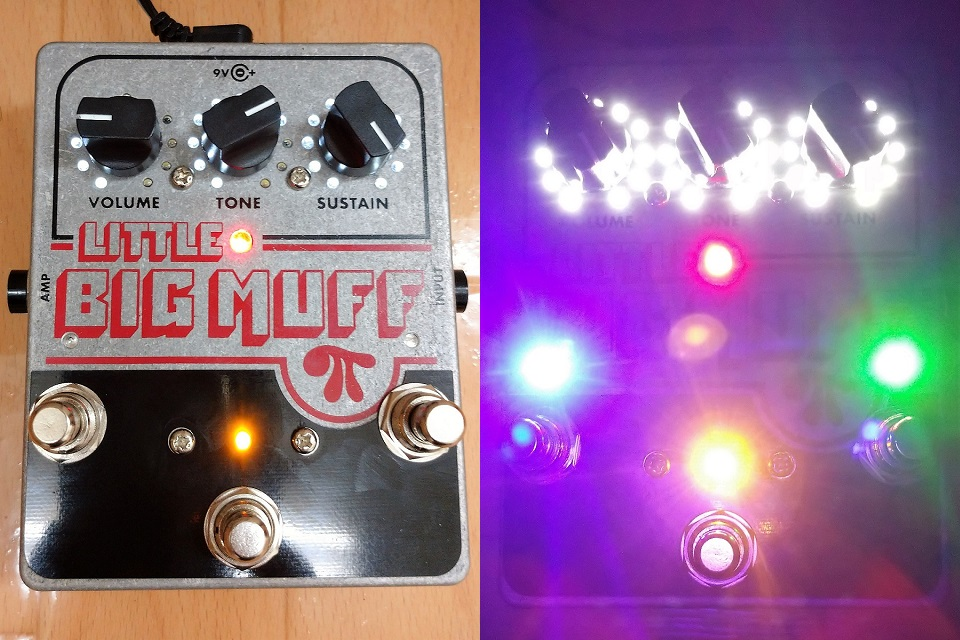

Bright Muff
2021年12月11日 カテゴリー：修理・改造・解析

第1回改造エフェクターコンテストに向け、Electro-Harmonix Little Big Muff Piにデジタル制御による3チャンネル化を施しました。コンテストにはオリジナルの自作エフェクターでも応募可能だったのですが、コンテスト名に改造とありますし、以前から考えていたデジタルポテンショメータを使ったアナログエフェクターの制御に取り組んでみることにしました。中にスペースがあるエフェクターが改造しやすいので、大きいケースのビッグマフが最適ですが、ケース加工の大変さを考えてLittleサイズの方にしました。ただ、やはりフットスイッチの間隔が狭く踏み間違えそうです（一応スイッチの高さには差をつけてあります）。
単純に多チャンネル化すると、保存していたプリセットを呼び出した時、各パラメータがどのようになっているか目視できないという問題があります。そこでDarkglassのADAMのように、ポット周囲のLEDでセッティング状況がわかるようにしました（見た目を派手にする目的も兼ねています）。後から思ったことですが、3チャンネル程度だと同じ回路基板を3つ積む方が早い気がします。7セグLEDを使って無駄に10チャンネルあった方が面白かったかもしれません。
▽回路図・基板画像
この基板の裏側に元のビッグマフの基板が取り付けられています。ビッグマフ基板はコンデンサの交換等いろいろと変更が必要ですが、マネする人はいないと思うので詳細は省きます。マイコンは、使い慣れている手持ちのSTM32F405を使用しました。
- デジタルポテンショメータ（DPOT）
ビッグマフの3つのポット（100kA、100kB、500kA）をDPOTで置き換えることになります。DPOTは抵抗値やカーブの種類が少ないため、全て100kBを使用しており、カーブは内部プログラムで調整しています。また、大抵のDPOTは5Vまでしか扱えないので、より高い電圧が可能なMCP41HV51を使用しています。本来は10V以上推奨ですが、9Vでも問題ないようです。元の回路ではポットを通る信号がGND中心なので、バイアス電圧4.5V中心となるよう変更し、出力にバッファを設けました。
さらに問題点として、DPOTは抵抗値を飛び飛びの値（今回は256段階）でしか設定できないので、抵抗値を変更した時にプツっというノイズがどうしても入ってしまいます。入力信号がゼロに近い（ゼロクロス）時に抵抗値を変更させる回路で軽減できるようですが、演奏時に支障はないのでそこまでは検討しませんでした。プリセット切替時には、切替ノイズを最小限にするため、VOLUMEを1段階ずつ下げて0にする→TONE、SUSTAINの設定変更→音量を1段階ずつ上げるという順番の内部処理となっています。
- LEDドライバ
LED点灯の方式にはダイナミック点灯とスタティック点灯があります（参考ページ→LEDのダイナミック点灯）。最初はマイコンとLEDを直接接続してダイナミック点灯させていましたが、ノイズが乗ってしまいました。そこでPCA9635というI2C制御のLEDドライバICを3つ使ってスタティック点灯へ変更しました。このICは簡単に個別のLEDの明るさをPWM制御することができ、大変便利です。
- アナログ-デジタル変換（ADC）
元のポットがあった所に別のポットを配置し、このポットの回転角度に応じた電圧をADCで取得することになります。昔NucleoボードのADCを使うという記事を書いていたのが役に立ちました。AD変換速度は遅くてもよいと思っていましたが、ADC完了割り込みのタイミングで少しノイズが発生していたので、ノイズが可聴域外になるよう高速にしています。ADCを高速にすると取得値が揺れ動きやすくなるので、256個の移動平均値を算出するようにしました。
▽取扱説明書
コンテスト応募時に同封した説明書です。
見た目のインパクトのためにLEDはできるだけ明るくしましたが、直視することができず実用上支障が出そうなので、調光モードで明るさを調整できるようにしました。普段はLEDの色による明るさの違いを気にしたことがなかったですが、比べてみると結構な違いでした。青と緑のLEDは電流制限抵抗の値を変えてあります。
アナログエフェクターのデジタル制御という面では、Tremolecのようにフォトカプラを使った方が自由度が高いように思います。セルフキャリブレーションのような機能を付けることができればフォトカプラのバラつきも許容できるかもしれません。コンテストが続くのかどうかはわかりませんが、また機会があればフォトカプラを使った改造にも挑戦してみたいと思います。